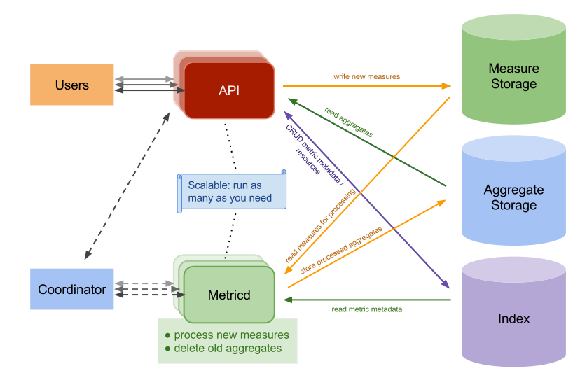
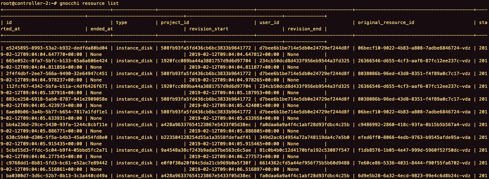
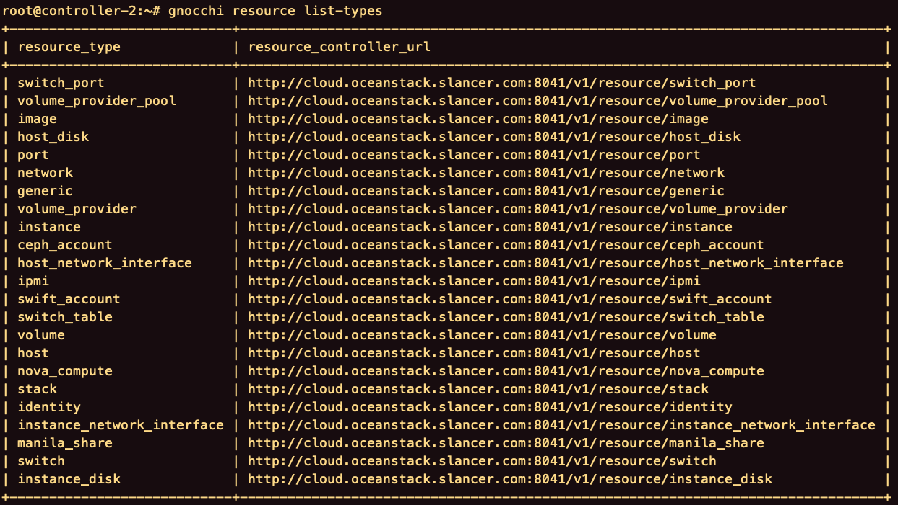
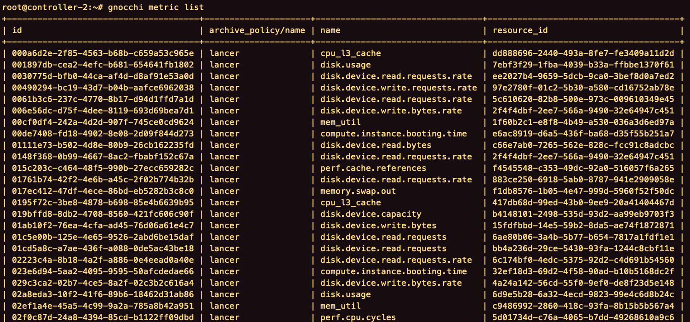
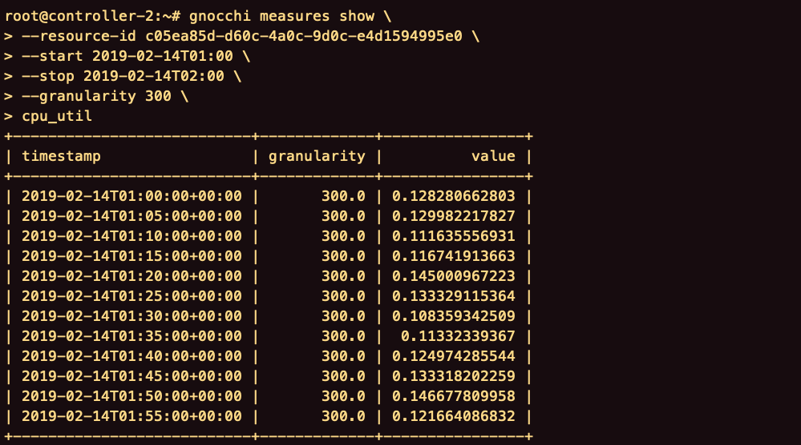
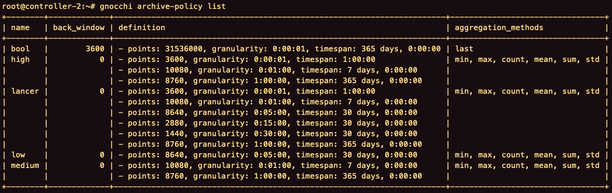

美味的gnocchi
目录
- 简介
- 架构
- gnocchi-api
- gnocchi-statsd
- gnocchi-metricd
- 存储引擎
- 索引驱动程序
- 概念
- Resource
- Resource types
- Metric
- Measures
- Archive policy
- 设置archive-policy和granularity
简介
Gnocchi - Metric as a Service
Gnocchi是一个多租户时间序列、计量和资源数据库。Gnocchi设计用于超大规模计量数据的存储，同时向操作者和用户提供对度量和资源信息的访问。
Gnocchi采用独特的时间序列存储方法：它不是存储原始数据点，而是在存储之前聚合它们。此内置功能与大多数其他时间序列数据库不同，后者通常支持此机制作为可选项并在查询时计算聚合（平均值，最小值等）。
架构

gnocchi-api
提供HTTP REST API。
gnocchi-statsd
Statsd是一个网络守护程序，它侦听使用TCP或UDP通过网络发送的统计信息，然后聚合发送到另一个后端。
gnocchi-statsd可以监听通过网络发送的指标。
gnocchi-metricd
异步处理的守护进程，gnocchi-metricd对后台接收的数据执行操作（系统计算、度量标准清理等）。
存储引擎
- 文件
- Ceph（首选）
- OpenStack Swift
- Amazon S3
- Redis
索引驱动程序
- PostgreSQL（首选）
- MySQL（至少5.6.4）
该索引器负责存储所有的resource、archive-policy和metric的索引，以及他们的定义、类型和属性。
该索引器还负责将resource与metric和resource关系连接起来。
概念
Resource
资源。

Resource types
资源类型。
1
| gnocchi resource list-types
|

当把某个resource删除后，gnocchi会自动创建一个同名的resource，需要重启ceilometer-collector服务。
这时，每个metric的arivce-policy是lancer。
Metric
度量，归属于resource。

创建一个metric。
1
2
3
4
| gnocchi metric create \
--resource-id c05ea85d-d60c-4a0c-9d0c-e4d1594995e0 \
--archive-policy-name low \
cpu_util
|
删除一个metric。
1
| gnocchi metric delete [metric-id]
|
当把resource的某个metric删除后，gnocchi会自动创建一个同名的metric，但是arivce-policy是默认的（low）。
Measures
测量数据，归属于metric。
1
2
3
4
5
6
| gnocchi measures show \
--resource-id c05ea85d-d60c-4a0c-9d0c-e4d1594995e0 \
--start 2019-02-14T01:00 \
--stop 2019-02-14T02:00 \
--granularity 300 \
cpu_util
|

Archive policy
1
| gnocchi archive-policy list
|

points，存储的点的数量。
granularity，监控的时间间隔。
timespan，保留时间。
创建archive-policy时，只需指定granularity和points，它们的乘积即为timespan。
设置archive-policy和granularity
gnocchi使用基于Carbonara库的自定义文件格式。在gnocchi中，时间序列是点的集合，其中点是在时间序列的寿命中的给定测量或样本。
1
2
3
4
5
6
7
8
|
size in bytes = number of points x 8.04 bytes
number of points = timespan / granularity
size in bytes = (365 * 24 * 60 * 60) / 5 * 8.04 = 49459507.2 bytes = 48300.3 KiB = 47.2 MiB
|
1
2
3
4
5
6
7
8
9
10
11
12
13
14
15
16
17
18
19
20
21
22
23
24
25
26
27
28
29
30
31
32
33
34
35
36
37
38
39
40
41
42
43
44
45
46
47
48
49
50
51
52
| root@controller-1:~
+-----------------------+---------------------------------------------------------------------+
| Field | Value |
+-----------------------+---------------------------------------------------------------------+
| created_by_project_id | 5ffb4613c041442eaae3eccd804b11d9 |
| created_by_user_id | 16621a6651c34393a31b16517fb17a7a |
| creator | 16621a6651c34393a31b16517fb17a7a:5ffb4613c041442eaae3eccd804b11d9 |
| ended_at | None |
| id | fd290506-c699-4cdc-ad9b-2b9f4b12674d |
| metrics | compute.instance.booting.time: 671e67f8-8249-4de2-84e7-b77ec1927155 |
| | cpu.delta: dbe591a5-3e0f-4465-a207-388d1fc6f761 |
| | cpu: 20789923-e460-4a10-9c5b-7615fb12db11 |
| | cpu_l3_cache: 626140fb-8ace-4729-8a0f-74de80cf568c |
| | cpu_util: ffd347c5-a6ca-4ff6-aeca-294f73fa6b97 |
| | disk.allocation: 9b66cfef-de30-4c1a-b211-3edecd8a3f23 |
| | disk.capacity: 5c090c0c-29c4-4ca3-b34a-c28bc482e2a2 |
| | disk.ephemeral.size: 1905d62e-a344-49b4-8838-d19cc2b3c563 |
| | disk.iops: 1f952ba9-bdf1-4b6c-8744-85bdc1363c71 |
| | disk.latency: 091d6a58-643a-4a4b-9704-22d56c996787 |
| | disk.read.bytes.rate: 694195e6-b1a6-44ef-bd29-7b2ece1d572e |
| | disk.read.bytes: 30de5d7f-fd6b-4531-8ba9-ebba37b9c0e8 |
| | disk.read.requests.rate: 42c9622f-c58b-44c2-842e-e909e918416b |
| | disk.read.requests: f977ad89-d41e-42c5-88f0-c357af5d8677 |
| | disk.root.size: 85401671-d1db-4e95-b3c0-451416c6e6b7 |
| | disk.usage: 97dda3d5-576d-4118-8b6d-1f70d402f74e |
| | disk.write.bytes.rate: d9998f52-857c-4d9e-9039-dd570de80904 |
| | disk.write.bytes: a39ca5da-6ca7-4459-af75-66a06d117198 |
| | disk.write.requests.rate: 52f7b037-473a-4efc-afc6-d4cbbdcaebc9 |
| | disk.write.requests: b8a52bc2-5de2-4a17-b449-adb56c32884a |
| | mem_util: 1c6456a8-9c2b-452d-ba15-a40faa78cb42 |
| | memory.bandwidth.local: 0dc1a66e-df18-4610-9fa5-a15299c169a6 |
| | memory.bandwidth.total: 07a87bef-0da0-4be9-9cbe-64fa30334750 |
| | memory.resident: 707531fa-89e6-4322-9bb1-3556e0fa3196 |
| | memory.swap.in: b0cc0461-26b7-41fe-8dbd-a8b0620984ef |
| | memory.swap.out: 97cca793-95ec-448a-90f7-1361ad254ea9 |
| | memory.usage: 2121df06-f186-48bd-9929-644e585aaf50 |
| | memory: 2406f042-7bca-43fe-b6e9-d57a63732d61 |
| | network_in_rate: daea496e-9ceb-4f75-b124-ad94d0f2b9de |
| | network_out_rate: e870932d-8947-4c29-81a7-63a98ffd2a22 |
| | perf.cache.misses: dbbb673b-72ed-4a1f-a759-6aa52987b71f |
| | perf.cache.references: 5379d928-5948-4a82-a8d3-845db286ce8f |
| | perf.cpu.cycles: a712218f-a2e4-45f1-8bad-14796c14a58e |
| | perf.instructions: 8df2679b-2711-4746-a9e8-855de1b84725 |
| | vcpus: 8dd43cbf-ea64-434e-940c-ccf3c26df23d |
| original_resource_id | fd290506-c699-4cdc-ad9b-2b9f4b12674d |
| project_id | b223504128254d55a1a3558fdefadf41 |
| revision_end | None |
| revision_start | 2019-02-19T07:13:27.311826+00:00 |
| started_at | 2019-02-12T09:05:25.564433+00:00 |
| type | instance |
| user_id | 349d2ac614954a72a748119da4c7e5b0 |
+-----------------------+---------------------------------------------------------------------+
|